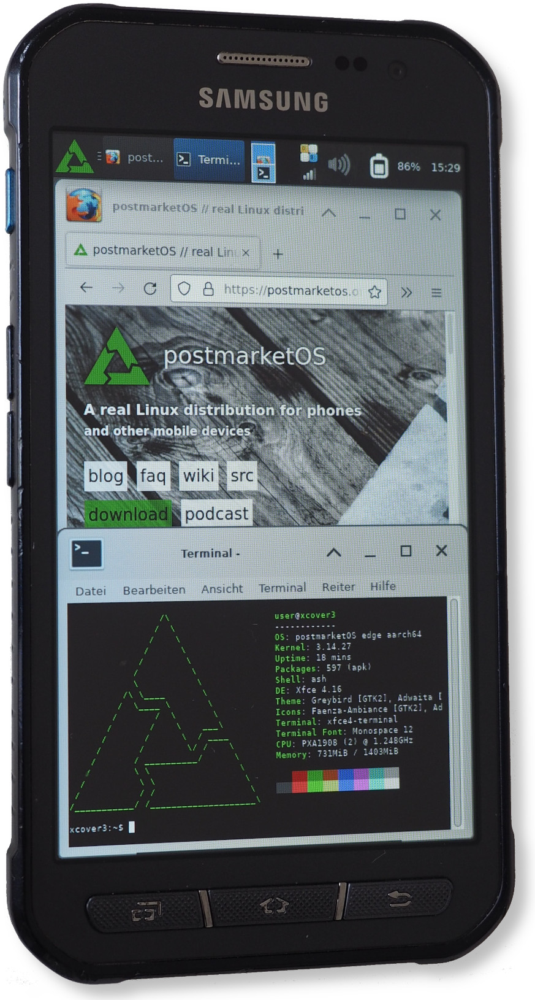

Samsung Galaxy Xcover 3 (samsung-xcover3lte)
|

Xcover 3 running XFCE |
|
| Manufacturer | Samsung |
|---|---|
| Name | Galaxy Xcover 3 |
| Codename | samsung-xcover3lte |
| Released | 2015 |
| Category | testing |
| Original software | Android 4.4.4 |
| postmarketOS kernel | 3.14.27 |
| Hardware | |
| Chipset | Marvell PXA1908 |
| CPU | Quad-core 1.2 GHz Cortex-A53 |
| GPU | Vivante GC7000UL |
| Display | 480x800 |
| Storage | 8 GB |
| Memory | 1.5 GB |
| Architecture | aarch64 |
| Unixbench Whet/Dhry score | 1137.7 |
{kind=link}
| USB Networking |
Works
|
|---|---|
| Flashing |
Partial
|
| Touchscreen |
Works
|
| Display |
Works
|
| WiFi |
Works
|
| FDE |
|
| Mainline |
Broken
|
| Battery |
Works
|
| 3D Acceleration |
Broken
|
| Audio |
Partial
|
| Bluetooth |
|
| Camera |
|
| GPS |
|
| Mobile data |
|
| SMS |
|
| Calls |
|
| USB OTG |
Works
|
| NFC |
|
| Accelerometer |
Partial
|
|---|---|
| Magnetometer |
Works
|
| Ambient Light |
|
| Proximity |
Works
|
| Hall Effect |
Unavailable
|
| Ir TX |
Unavailable
|
|---|---|
| TrustZone |
|
Contributors
- Blacksilver
Users owning this device
How to enter flash mode
Volume Down + Home + Power
How to enter recovery mode
Volume Up + Home + Power
What works
- XFCE
- Weston
- TTYEscape
- fbkeyboard
- Flashing the boot image.
What doesn't work
- Blanking and Unblanking leads to framebuffer flickering, which stays after reboot and even battery-removal for some time.
- Only kernels built with GCC4 will boot.
- AlsaUCM profile must be reapplied before each audio play.
- LEDs
- Serial/extern console (MUIC SM5504)
- Flashing to SYSTEM or USER partition currently fails after 10% for unknown reason. The phone is in rescue mode afterwards, which can be fixed by flashing a boot image.
Installation
Flash the boot-image
pmbootstrap flash flash_kernel
Installation of rootfs can be be done either to SD-card
pmbootstrap install --sdcard=/dev/XXXXX
This makes manual dual boot (by replacing boot-image) possible.
Alternatively installation can be done via recovery to USER partition (5.3GB). The system partition is rather small (1536M) for postmarketos with UI.
For installation to USER partition via android-recovery-zip you need a TWRP recovery (codename xcover3ltexx) The latest TWRP recovery isn't flash-able after update to latest vendor version (Android 5.0). A "Hackish TWRP" alternative recovery image can be found in XDA forum.
$ pmbootstrap install --android-recovery-zip --recovery-install-partition USER
$ cp /tmp/postmarketOS-export/pmos-samsung-xcover3lte.zip ...
Boot image
The created pxa-bootimage contains a legacy uImage which is slightly different from vendor one.
Despite having keyword
postmarketos
and missing extra gzip compression, it boots as well.
Debugging
To enable ramoops the kernel cmdline must be extended by these module parameters. See also ramoops
ramoops.mem_size=0x40000 ramoops.mem_address=0x8100000 ramoops.record_size=0x8000 ramoops.console_size=0x30000 ramoops.dump_oops=1
After kernel panic the console can be extracted in e.g. recovery.
hexdump -C -s 0x8108000 /dev/mem | less
Audio
The Alsa UCM usecase must be set before each play, e.g.
alsaucm -c map_asoc set _verb HiFi set _enadev Speaker
Mainline
Attempt to add mainline support for pxa1908 aka iap140 was done in 2017 for https://en.opensuse.org/HCL:AndromedaBoxEdge here
https://lore.kernel.org/linux-arm-kernel/20170222022929.10540-1-afaerber@suse.de/
Mainline driver support
| Component | Model | Downstream Driver | Mainline | Notes |
|---|---|---|---|---|
| Charger/MUIC | Silicon Mitus SM5504 | Y | ||
| PMIC | Marvell 88pm860 | Y | ||
| PMIC | Marvell 88pm886 | N | Attempt: https://lkml.org/lkml/2015/6/12/200 | |
| Touchscreen | Cypress cyttsp5 | cyttsp5_i2c_adapter |
|
https://lwn.net/ml/linux-kernel/20220227123318.313009-1-alistair@alistair23.me/ |
| Display Backlight | KTD2801 | ktd2801_bl | N | |
| Wifi/Bluetooth | Marvell Avastar® 88W8777 WLAN + Bluetooth 4.0 + NFC + FM | SD8777 | N |
Adding SD8777 support to mwifiex & btmrvl_sdio might be straightforward, based on downstream comparsion of
wlan/mbtc-driver
diff between SD8777 and SD8787
|
| Front camera | Siliconfile SR200PC20 | sr200 | N | |
| Back camera | Siliconfile SR544 | sr544 | N | |
| Gyroscope/Accelerometer | STM K2HH | k2hh | N |
/sys/class/sensors/accelerometer_sensor/raw_data
, see
https://wiki.tizen.org/SamsungZ3#Sensors
|
| Magnetometer | AKM ak09911c | Y |
/sys/class/sensors/magnetic_sensor/raw_data
|
|
| Light/Proximity sensor | Sharp GP2A | Y |
/sys/bus/iio/devices/proximity_sensor/enable
,
/sys/class/sensors/proximity_sensor/state
|
|
| NFC | ST21NFCA | Y | ||
| GNSS | Marvell 88L2000 R | N | ||
| Vibrator |
echo 200 > /sys/class/timed_output/vibrator/enable
|
Partitions
Disk /dev/block/mmcblk0: 15269888 sectors, 3360M
Logical sector size: 512
Disk identifier (GUID):
Partition table holds up to 128 entries
First usable sector is 34, last usable sector is 15269854
Number Start (sector) End (sector) Size Code Name
1 8192 9215 512K 0700 MRD
2 9216 10239 512K 0700 MRD1
3 10240 24575 7168K 0700 MEP2
4 24576 28671 2048K 0700 LOKE2ND
5 28672 32767 2048K 0700 LOKE1ST
6 32768 65535 16.0M 0700 EFS
7 65536 73727 4096K 0700 PARAM
8 73728 106495 16.0M 0700 RECOVERY
9 106496 139263 16.0M 0700 KERNEL
10 139264 196607 28.0M 0700 MODEM
11 196608 262143 32.0M 0700 SSTD
12 262144 264191 1024K 0700 OTA
13 264192 313343 24.0M 0700 NVM
14 313344 3459071 1536M 0700 SYSTEM
15 3459072 3868671 200M 0700 CACHE
16 3868672 4073471 100M 0700 HIDDEN
17 4073472 15267839 5466M 0700 USER
Similar devices
The following devices are similar to SM-G388F.
- Core Prime VE LTE
- Grand Prime VE LTE
- Samsung Galaxy J1 ACE (j1acelteltn) - SM-J110m
See also
- pmaports!3139 Initial merge request
- Device package
- Kernel package
- Android kernel
- Android vendor
- Android device